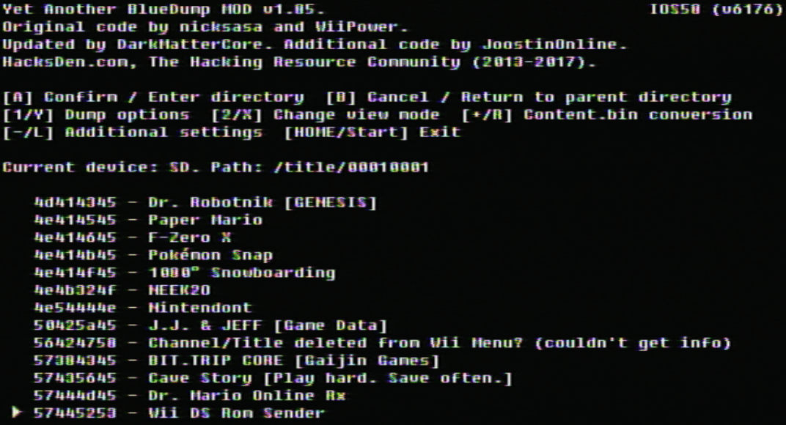

Copiar canales instalados en formato WAD
Si tienes problemas para seguir los pasos de esta guía, por favor solicita ayuda en nuestro servidor de Discord (recomendado), o envíanos un correo electrónico. Soporte disponible solo en inglés.
Si necesitas ayuda para seguir los pasos de esta guía, por favor solicita ayuda en nuestro servidor de Discord (recomendado) o envíanos un correo electrónico a [email protected].
En esta guía te explicaremos cómo extraer canales instalados en la memoria del sistema en forma de WADs.
Requisitos
- Una tarjeta SD o unidad USB
- Yet Another BlueDump MOD
Instrucciones
Sección I - Descarga/instalación
- Extrae Yet Another BlueDump MOD en tu tarjeta SD o memoria USB.
- Inserta la tarjeta SD o unidad USB a tu Wii e inicia Yet Another BlueDump Mod desde el Canal Homebrew.
Sección II - Copiando los WADs
-
Oprime el botón A.

-
Selecciona
Installed Channel Titles.
-
Encuentra el contenido que quieres copiar y oprime el botón 1. 
- Selecciona
Backup to WAD. - Cuando aparezca
Fakesign the ticket, seleccionaYes. - Cuando aparezca
Fakesign the TMD, seleccionaNo. - En el indicador de
Change the output WAD region, seleccioneNo.
Ahora ya has copiado el canal en formato WAD. Debería aparecer en tu tarjeta SD o unidad USB.